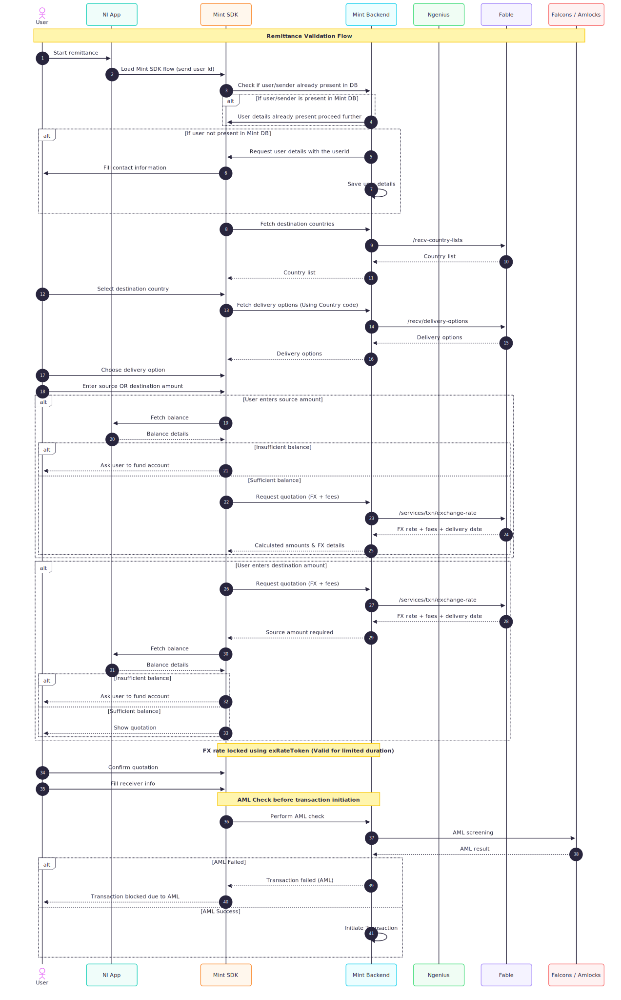
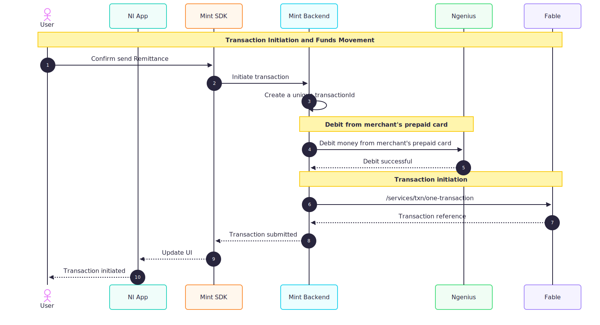
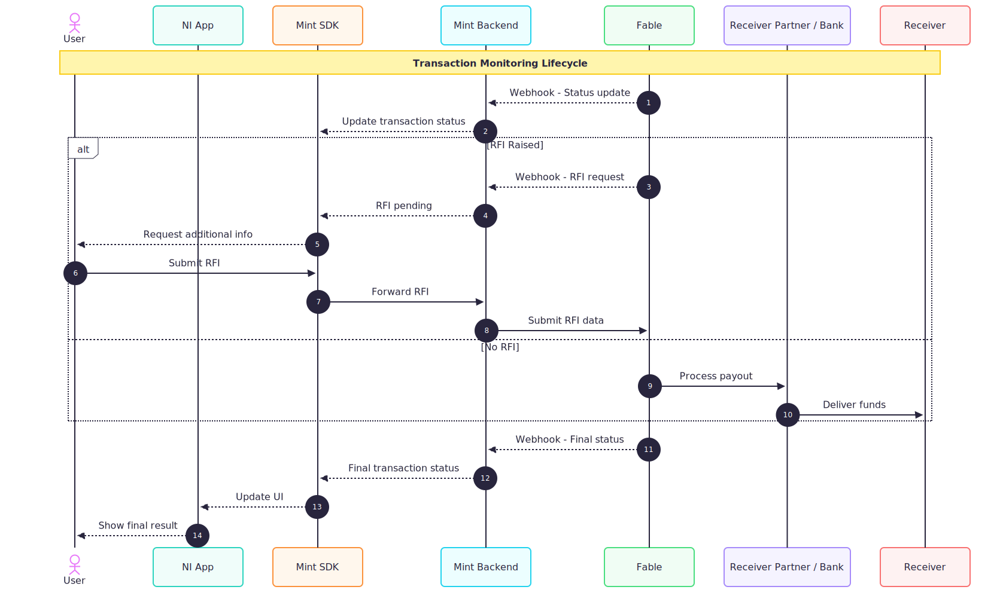

Overview
Remittance SDK is a B2B-focused remittance orchestration solution developed by MINT to enable merchant platforms to perform cross-border money transfers efficiently, compliantly, and with optimal foreign exchange outcomes.
The SDK eliminates the need for merchants to integrate directly with individual remittance rails by dynamically discovering real-time exchange rates and routing transactions through the most suitable rail network for a given source–destination corridor.
Acting as an intermediary abstraction layer, the Remittance SDK connects merchant applications with MINT’s backend, which in turn integrates with multiple external rail providers and compliance services, enabling faster integration and reduced operational complexity.
1. Background and Evolution
In traditional remittance models, merchants typically integrate with a single remittance rail provider and rely entirely on that provider’s pricing, corridor availability, and operational constraints. This approach introduces vendor lock-in and limits the merchant’s ability to respond to fluctuating exchange rates and corridor-specific performance.
As cross-border remittance ecosystems have grown more fragmented, no single rail consistently offers the best exchange rate or coverage across all corridors. This fragmentation necessitated a platform-driven approach capable of evaluating multiple rails in real time.
The Remittance SDK evolved to address this challenge by decoupling merchant applications from individual rail providers and introducing intelligent, corridor-aware routing managed centrally by the MINT platform.
2. Purpose of the Service
The primary purpose of the Remittance SDK is to abstract remittance orchestration, FX rate discovery, routing logic, and regulatory compliance checks behind a single, consistent SDK interface for merchant developers.
Upon invocation, the SDK initiates real-time FX rate discovery and determines the optimal rail network for the transaction. It also triggers AML compliance checks by invoking NI APIs, ensuring regulatory adherence before the transaction proceeds.
The SDK does not manage retries or fallback scenarios. Its responsibility is limited to real-time routing, compliance validation, and secure transaction initiation, while downstream execution remains the responsibility of the selected rail network.
3. Position in the Ecosystem
The Remittance SDK functions as a middleware orchestration layer between merchant platforms and global remittance rail providers.
- The merchant application invokes the Remittance SDK to initiate a remittance transaction.
- The SDK communicates securely with the MINT backend.
- The backend performs real-time FX rate discovery, invokes NI APIs for AML checks, and consults Fable, an external partner, for rail selection.
- Fable routes the transaction to the most suitable rail network based on corridor and exchange-rate optimization.
- The selected rail executes the transfer and delivers funds to the destination network.
This layered architecture ensures that merchants remain insulated from rail-specific integrations, compliance workflows, and routing logic while interacting through a stable and developer-friendly SDK.
4. Key Differentiators
- Real-Time FX Optimization: Dynamic exchange rate discovery ensures transactions are routed through the most competitive rail for each corridor.
- Multi-Rail Orchestration: Integration with multiple rail networks via Fable eliminates dependency on a single provider.
- Embedded Compliance Handling: AML checks are seamlessly performed via NI APIs as part of the transaction flow.
- Merchant-Centric Design: A single SDK integration replaces multiple rail-specific implementations.
- Clear Responsibility Boundaries: Routing and compliance are handled by the platform, while execution remains with the selected rail.
5. Strategic Objective
The strategic objective of the Remittance SDK is to position MINT as a centralized remittance orchestration platform that enables intelligent, compliant, and corridor-aware money movement for B2B ecosystems.
By consolidating FX optimization, AML validation, and rail selection into a single platform layer, the SDK allows merchants to scale across corridors rapidly without repeatedly reengineering their remittance infrastructure.
In the long term, this approach enables MINT to continuously enhance routing intelligence and compliance capabilities while providing merchant developers with a stable and future-ready integration surface.
System Architecture
Remittance SDK architecture is based on a secure, efficient and robust design which can be integrated seamlessly by the issuer's. It enables reliable interaction between the issuer's app and the remittance ecosystem through which the issuer's merchants can effortlessly send remittance and receive real-time updates on their status.
The remittance ecosystem in our architecture includes parties like Issuer's app, Mint SDK, Mint Backend, Fable, Rail Network etc., which together provides a compliant and robust network for B2B remittance maintaining global standards.

1. Architectural Overview
The Mint Remittance Architecture can be broadly divided into the following domains:
1.1 Issuer Domain
- It consists of the issuer's native mobile application (Android/iOS) embedded with Mint SDK.
- Acts as the user's interface for remittance initiation.
- Establishes secure connection with Mint Backend using OAuth 2.0 protocol
1.2 Mint Backend Domain
- It handles the communication with Mint SDK for user inputs for remittance.
- Communicates with NI WAY4 for verifying if merchant has sufficient balance for remittance.
- Communicates with NI's Ngenius payout system for AFT transactions.
- Communicates with Falcon for AML check
- It is also responsible for sending the transaction to Fable and providing transaction status to the end user
1.3 NI Internal Domains
It consists of two parts:
a. WAY4
- It is the NI's card management system which securely handles card details and exposes secure APIs for getting card details
- Mint Backend domain calls WAY4 for merchant's card balance before initiating remittance
b. Ngenius
- It is NI's internal payout system responsible for handling AFT transactions
- Mint Backend domain calls Ngenius APIs to pull funds from merchant's account to NI's pool account.
1.4 AML Verification Domain
- Falcon is an Anti-Money Laundering system which is responsible for monitoring transactions and preventing frauds
- Mint Backend domain calls Falcon API's for verification of the merchant's remittance details
1.5 Remittance Network Domain
It consists of two parts:
a. Rails Network
- These are the rails like Mastercard, Visa, Thunes which are actually responsible for sending money across the countries
- They provides the FX rates, tax and charges for remittance
b. Receiver Partner
- These are the banks or wallets or cash payout agencies which are responsible for sending money to the receiver
1.6 Aggregator Domain
- Fable acts as the aggregator for all the rails.
- Fable provides the best exchange rate among the rails for every transaction.
2. End-to-End Remittance Flow
The following steps describes the interaction how the various domains interacts among themselves to perform a remittance transaction successfully.
- Initiation: The user initiates a remittance through the send remittance button in the issuer mobile app. This routes the user to Mint SDK. During this launch the issuer app is verified using client Id and client secret.
- User Input: During this step the user inputs the amount he/she wants to send. Mint Backend then verifies if the user has sufficient balance for transaction using WAY4 APIs.
- AML verification: After user fills the transaction details, Mint Backend invokes Falcon APIs for AML verification.
- Debit merchant balance: Mint Backend invokes Ngenius domain for AFT transaction to pull funds from merchant's account to NI's pool account.
- Initiate remittance: After successful AML verification and AFT transaction Mint Backend initiates remittance through Fable.
- Sending money to receiver: Fable relays the remittance request to the best suitable rail through intelligent routing. The rail network sends the money to the receiver partner of the corresponding receiver corridor. The receiver partner sends the money to the end receiver
- RFI Request: For some corridors, the receiver partners request extra documents for transaction validation which is known as Request For Information(RFI) In this scenario the merchant again needs to provide those documents in the defined timeline.
- Transaction History and Reporting: The Mint SDK invokes Fable API via Mint Backend to get the transaction details. Mint Backend also maintains the AML verfication and successful AFT transaction status for reporting purposes
3. Communication & Security Framework
The entire remittance lifecycle from user landing into the Mint SDK to completing the transaction has been secured to ensure reliability and integrity. All the users landing into the Mint SDK needs to be authenticated by the issuer app. The issuer app can provide different access groups to user depending on their access to remittance functionalities. All the API invocations from Mint SDK to Mint Backend are secured using OAuth 2.0 protocol
4. Architectural Advantage
| Aspect | Advantage |
|---|---|
| Scalability | The architecture is based on a distributed and cloud-native architecture that enables efficient scaling and load distribution. |
| Resilience | The architecture implements retry mechanisms and redundant data storage which helps resiliency even in case of network failures or system unavailabilities. |
| Interoperability | Works with various rail networks like Visa, Mastercard, Thunes which helps in availability even when one of them is unavailable. |
| Data Security | Enforced encryption, hashing, and token-based access control ensure full data protection. |
| Operational Insight | Transaction logs, AML status and other related details are stored for tracking and analytics |
5. Architecture Summary
In essence, the Mint Remittance SDK architecture is designed to unify real-time decisioning, compliance orchestration, and network abstraction into a single, developer-centric integration layer. It enables merchant platforms to initiate outward remittances seamlessly, while Mint’s backend and partner ecosystem handle FX discovery, routing, and regulatory enforcement behind the scenes.
Functional Flows – Overview
Mint Remittance Services Functional Flows describe the end-to-end processes governing quotation discovery, balance validation, compliance screening, transaction initiation, and transaction lifecycle management for cross-border remittances.
These flows define how a merchant or issuer application integrated via the Mint SDK interacts with Mint Backend, compliance engines, FX partners, and payout networks to ensure secure, compliant, and real-time remittance execution.
Design Objectives
- Prevent ineligible or non-funded transactions
- Enforce AML and regulatory compliance via Falcons
- Ensure deterministic, auditable, and traceable outcomes
Primary Operational Flows
- Remittance Transaction Validation Flow
- Transaction Initiation and Funds Movement Flow
- Transaction Monitoring and Lifecycle Management Flow
Remittance Transaction Validation Flow
This flow determines whether a remittance transaction is eligible to proceed. It ensures sufficient sender balance, AML clearance via Falcons, and corridor-level validations before allowing transaction initiation.
Flow Description
- The sender initiates a remittance journey from the merchant application integrated with the Mint SDK.
- The SDK establishes transaction context using the sender identifier.
- Mint Backend retrieves sender profile and configuration data.
- The SDK requests available destination countries and delivery modes.
- Mint Backend applies corridor, partner, and regulatory constraints.
- The sender enters either a source amount or destination amount:
- Source Amount
- SDK performs a real-time balance check via the merchant system.
- Insufficient balance results in immediate termination.
- Destination Amount
- Mint Backend retrieves FX quotation.
- Calculated source amount is validated against sender balance.
- Insufficient balance results in termination.
- Source Amount
- Mint Backend issues a time-bound FX lock token.
- Sender confirms quotation.
- Transaction metadata is submitted to Falcons for AML screening.
- Approved transactions are cleared for initiation; rejected transactions are blocked.
Transaction Initiation and Funds Movement Flow
This flow governs transaction creation, sender fund debits, and submission to remittance partners for execution.
Flow Description
- The merchant initiates transaction execution using the approved FX lock token.
- Mint Backend creates a remittance transaction record with a unique transaction ID.
- Sender funds are debited via the merchant or issuer system.
- Funds debit confirmation is validated.
- Mint submits the transaction to the remittance partner with payout instructions.
- Transaction status transitions to PROCESSING.
Transaction Monitoring & Lifecycle
This flow manages post-initiation transaction states, partner callbacks, exception handling, and final settlement notifications.
Flow Description
- Mint receives asynchronous status updates from remittance partners.
- Transaction state transitions through lifecycle stages such as:
- PROCESSING
- COMPLETED
- FAILED
- REVERSED
- Exceptions or RFIs are surfaced to the merchant via webhooks.
- Final transaction outcomes are recorded and reconciled.
- Merchant systems receive terminal status notifications.